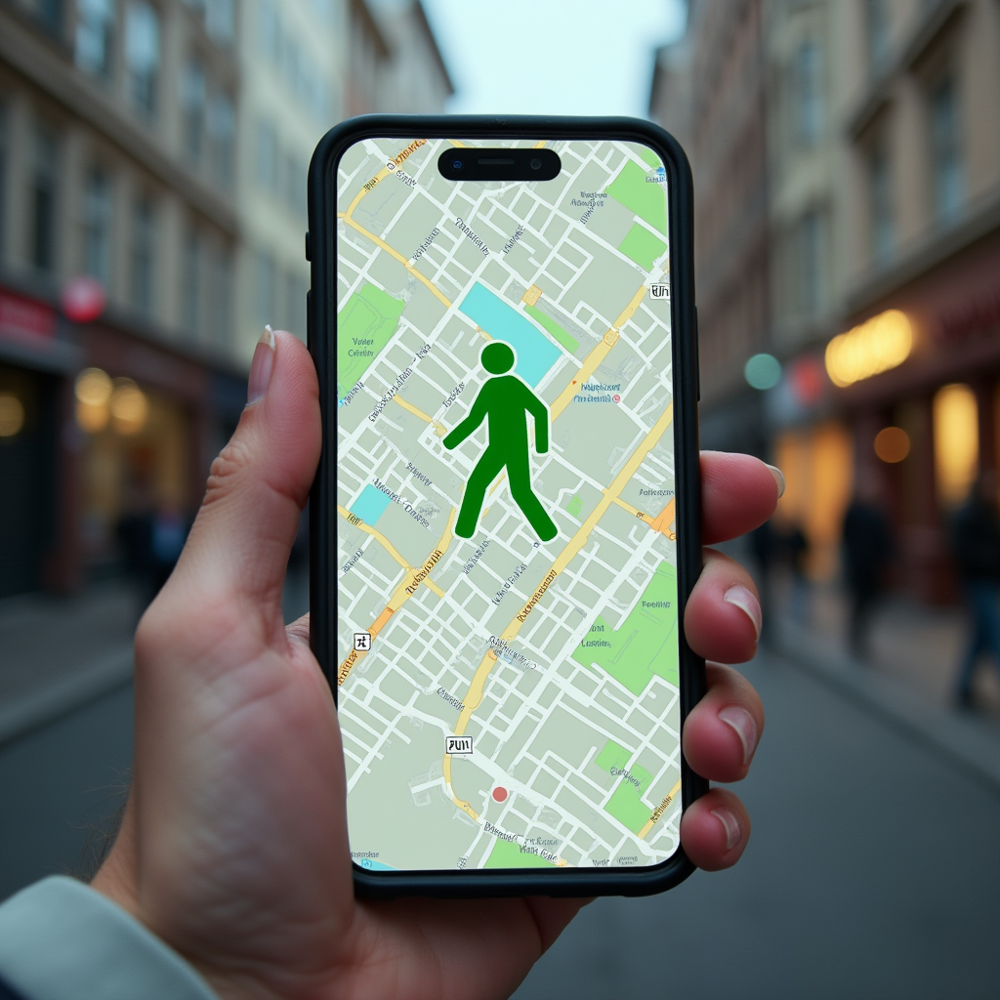
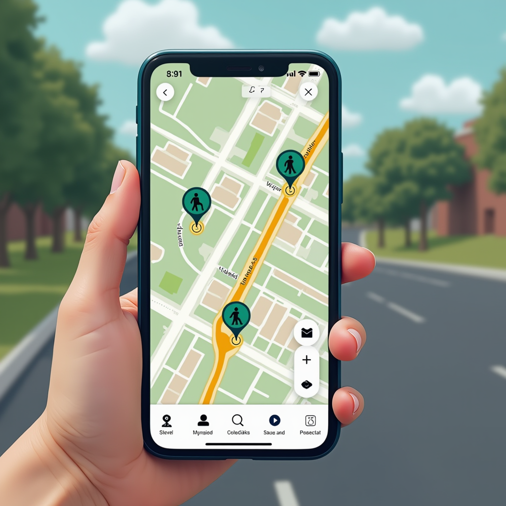
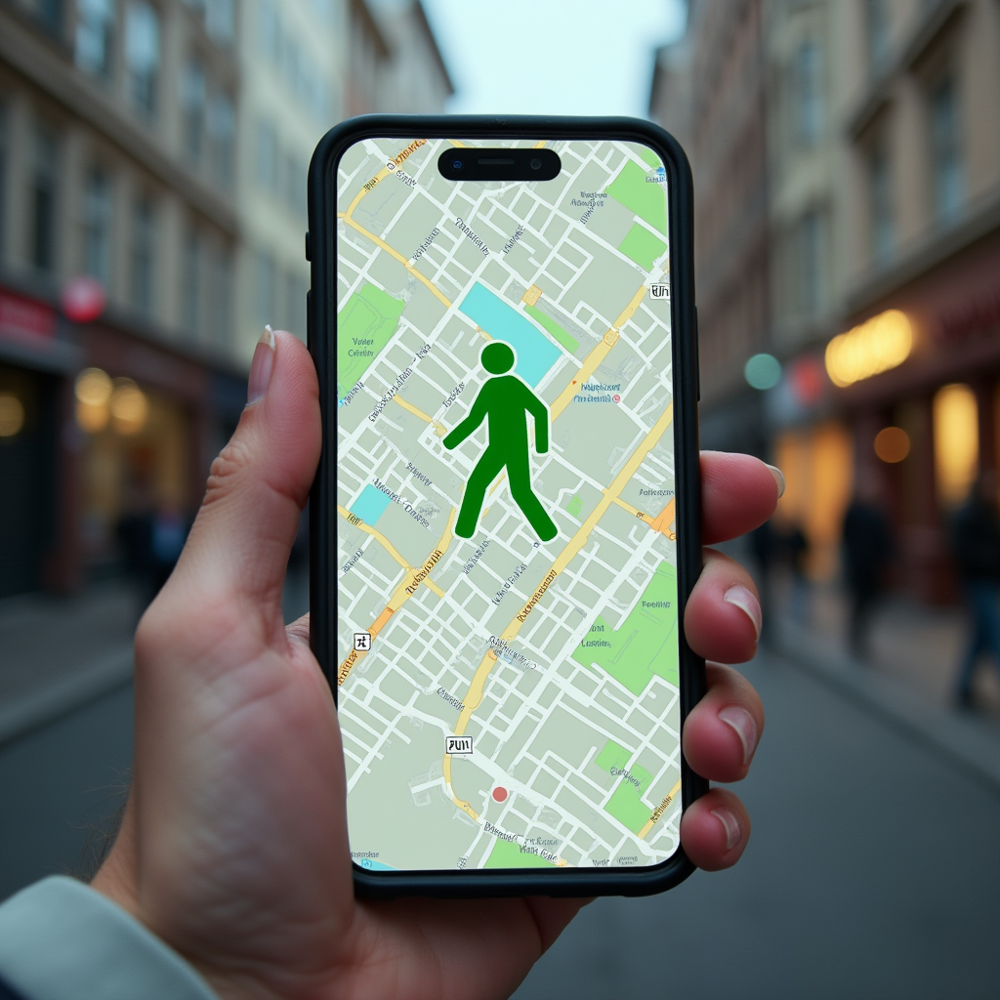
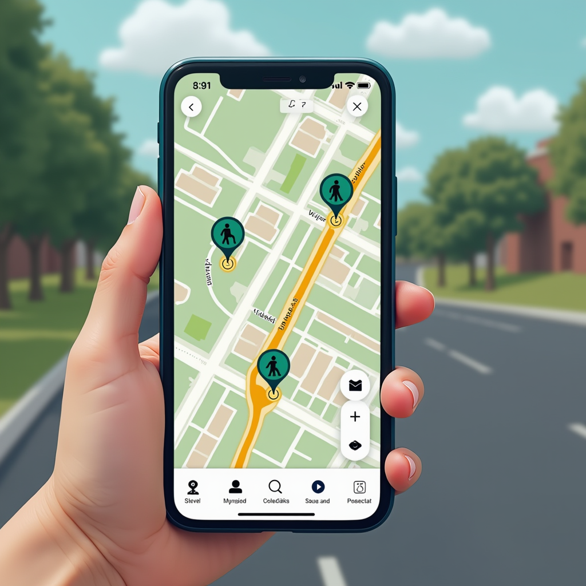

D-HUB: Dezavantajlı Yol Kullanıcıları İçin Ulaşım Platformu
D-HUB: Dezavantajlı Yol Kullanıcıları İçin Ulaşım PlatformuComplete Mobility Provider
 D-HUB: Dezavantajlı Yol Kullanıcıları İçin Ulaşım Platformu
D-HUB: Dezavantajlı Yol Kullanıcıları İçin Ulaşım Platformu

📌 Türkiye’de yaklaşık 8,5 milyon engelli birey bulunmaktadır (TÜİK 2023).
📌 Bu bireylerin güvenli, erişilebilir ve engelsiz ulaşım altyapısına ihtiyacı vardır.
📌 Bunun için uçtan uca mobilite çözümleri gerekmektedir.
D-HUB, engelli ve hareket kabiliyeti sınırlı bireylerin şehir içi ulaşımdaki ihtiyaçlarını karşılamak için tasarlanmıştır. Platform:
📌 Gaziantep Şehir Stadyumu Çevresi (33.000 Kişilik Kapasite)
📌 Gaziantep Büyükşehir Belediyesi iş birliğiyle hayata geçirilecektir.
📌 Engelli bireylerin şehir içinde bağımsız ve güvenli hareket edebilmesini sağlamak.
📌 TOPLAM ALAN 106.000m2
📌 33.000 KOLTUK
📌 1000 ARAÇLIK AÇIK OTOPARK KAPASİTESİ
📌 300 ARAÇLIK KAPALI OTOPARK KAPASİTESİ
📌 GAZIRAY BEYLERBEYI VE STADYUM İSTASYONU
📌 NORMAL GUNLERDE 10.000 YOLCU/GÜN, MAÇ GÜNÜ 15.000 YOLCU/GÜN

D-HUB, dezavantajlı bireylerin ulaşım ihtiyaçlarını güvenli ve erişilebilir bir şekilde karşılamak amacıyla tasarlanmıştır.
Engelli bireylerin kent içi hareketliliğini artırarak erişilebilir ve güvenli bir ulaşım altyapısı oluşturmak.
D-HUB, dezavantajlı bireyler için bağımsız hareket imkânı sunan, şehirleri daha erişilebilir ve kapsayıcı hale getiren akıllı bir ulaşım yönetim sistemidir. 🚀
D-HUB, dezavantajlı kullanıcıların güvenliğini ve bağımsız hareketliliğini artıran akıllı bir ulaşım yönetim sistemi sunmaktadır. 🚀
 




| Sıra | Adı/Modeli | Miktarı | Kullanım Dönemi / Süresi | Kullanım Gerekçesi | Kullanım Yeri | Tahmini Bedeli (TL) |
|---|---|---|---|---|---|---|
| 1 | Bluetooth Tabanlı Tespit Sensörü | 10 | 12 ay | Yaya hareketliliği ve trafik yoğunluğunu izlemek için kullanılacaktır. | Stadyum çevresi, yoğun etkinlik alanları ve trafik noktaları | 355,000 |
| 2 | Hareketli Kamera (PTZ) | 10 | 12 ay | Park Yönetimi, yaya ve araç hareketlerini izlemek için kullanılacaktır. | Stadyum çevresi ve otopark alanları | 4000 |
| 3 | Saha Kenar İşlemcisi | 12 | 12 ay | Kamera yayınlarının işlenerek park yönetimi, araç ve yaya tespitinde kullanımı | Trafik yönetim merkezi ve veri analiz sistemleri | 1,022,400 |
| 4 | Park Blok Bariyeri | 50 | 12 ay | Dezavantajlı kullanıcılar için park yeri rezervasyonu | Dezavantajlı otopark yerleri | 800,000 |
| 5 | Bariyer seti | 6 | 12 ay | Dezavantajlı otopark alanlarını kontrol etmek için | Otopark giriş-çıkış noktaları | 373,000 |
| 6 | Otopark Plaka Tanıma | 6 | 12 ay | Rezervasyon yapan kullanıcıları tanıyıp bariyer kontrolü sağlamak için | Stadyum çevresi ve otopark giriş-çıkışları | 255,600 |
| 7 | Dinamik Kavşak Kontrol Modülü | 3 | 12 ay | Dezavantajlı bireylere öncelik tanıyıp trafik yönetimi sağlamak | Stadyum çevresindeki 3 kritik kavşak | 372,750 |
| 8 | Trafik Kameraları | 12 | 12 ay | Kavşakların dinamik yönetimi için veri sağlamak | Stadyum çevresi, kritik kavşakların giriş noktaları | 213,000 |
| 9 | Sunucu | 1 | 12 ay | Toplanan verilerin saklanması, işlenmesi ve analiz edilmesi | Trafik yönetim merkezi | 284,000 |
| 10 | Pano | 5 | 12 ay | Elektriksel ekipmanların kontrolü ve güvenliği | Stadyum çevresindeki cihaz bağlantı noktaları | 134,000 |
| 11 | Switch | 5 | 12 ay | Ağ altyapısının kurulması ve veri iletişiminin sağlanması | Stadyum çevresindeki cihaz bağlantı noktaları | 134,000 |
| 12 | UPS | 5 | 12 ay | Elektrik kesintilerinde sistemlerin sürekliliğini sağlamak | Stadyum çevresindeki cihaz bağlantı noktaları | 62,500 |
| 13 | İş İstasyonu | 1 | 12 ay | 33.000 kişilik stadyum simülasyonu için | Ofis ortamı | 142,000 |
| 14 | Vissim + Viswalk | 1 | 12 ay | Trafik ve yaya akışı simülasyonları için | Simülasyon ve planlama süreçleri | 1,065,000 |
| Toplam | 5,217,250 TL | |||||
| Sıra | Personelin Mesleği / Unvanı | Uzmanlık Alanı | Projedeki Görevi | İstihdam Süresi | Kişi Sayısı | Kişi Başına Ödenecek Ücret (TL) | Toplam Ücret (TL) |
|---|---|---|---|---|---|---|---|
| 1 | İşletmeci / Proje Sorumlusu | Ulusal ve uluslararası proje yönetimi, bütçe planlaması, finansal takip, sosyal medya ve web içerik yönetimi | Proje Yürütücüsü | 12 ay / 6 adam-ay | 1 | 96,600 | 597,600 |
| 2 | İnşaat Mühendisi / Trafik Mühendisi | Çok modlu trafik simülasyonu, kavşak ve koridor tasarımı, akıllı ulaşım sistemleri projelendirme | Kıdemli Trafik Mühendisi | 12 ay / 12 adam-ay | 1 | 137,500 | 1,650,000 |
| 3 | Bilgisayar Programcısı / Yazılım Uzmanı | Express, NestJS, PostgreSQL, Golang, .NET, Java, Docker, Redis, RabbitMQ | Yazılım Uzmanı | 12 ay / 12 adam-ay | 1 | 189,000 | 2,268,000 |
| 4 | Geomatik Mühendisi / Harita Mühendisi | Veri analizi ve haritalama | Veri Analiz Mühendisi | 12 ay / 8 adam-ay | 1 | 90,000 | 720,000 |
| 5 | Şehir ve Bölge Plancısı / Trafik Mühendisi | Ulaşım ağı modelleme, trafik simülasyonu, sinyal koordinasyonu, kentsel planlama | Trafik Mühendisi | 12 ay / 7 adam-ay | 1 | 126,500 | 885,000 |
| 6 | Şehir ve Bölge Plancısı / Trafik Mühendisi | Ulaşım modeli, trafik sinyalizasyon tasarımı, kavşak tasarımı, sinyal süre optimizasyonu | Trafik Mühendisi | 12 ay / 6 adam-ay | 1 | 67,000 | 402,000 |
| Toplam | 6,523,100 TL | ||||||
| Sıra | Adı | Miktarı | Amacı | Dönemi ve Süresi | Teklif Alınan Hizmet Bedeli (TL) |
|---|---|---|---|---|---|
| 1 | Doç. Dr. Berk Anbaroğlu | 1 | Farklı trafik ve yaya akış senaryolarının simülasyon araçlarıyla analiz edilerek en verimli boşaltma yönteminin belirlenmesi. | 12 ay | 300,000 |
| 2 | Bursiyer (Feridun Tolga Solak) | 1 | Simülasyon ortamında analizlerin gerçekleştirilmesi ve farklı senaryoların değerlendirilmesi. | 12 ay | 57,600 |
| Toplam | 357,600 TL | ||||
| Açıklama | Tutar (TL) |
|---|---|
| Proje Toplam Bütçesi | 12,097,950 |
| Destek Talebi Miktarı | 9,073,462.5 |